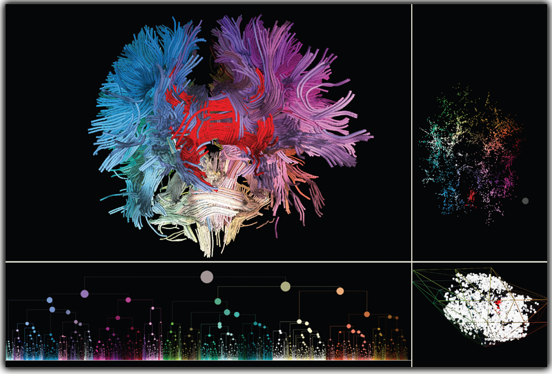

|
Coordinated DTI tractogram model of a human brain (upper-left) explored with lower dimensional visualizations: 2D embedding (upper-right), hierarchical clustering (lower-left), and L*a*b* color embedder (lowerright). Selections of fiber-bundles (red) in a view are mirrored in all other views. |